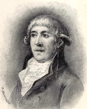
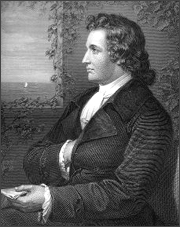

Poets Associated with Scott’s An Apology for Tales of Terror
Table of Contents . . . Introduction . . . Text of the Poems
1747–94). Author of the
ballads “Lenore” and “Die Wilde Jäger” (appearing in
the Apology in Scott’s English translations
“William and Helen” and “The Chase”).
Greatly inspired by Percy’s Reliques of Ancient English Poetry (1865) and Johann Gottfried
Herder’s Volkslieder
[“Folksongs”], Bürger was a German poet best known
for his supernaturalist ballads in folk-song style;
the famous “Lenore” was widely
translated and had special influence on the English ballad-writing revival of
the 1790’s. Although Bürger served, without much
distinction, in a number of minor government posts, his real interests seemed
to
have consisted in carousing and literary pursuits, and he became closely
associated with the “Göttinger Bund” or “Ham,” a literary society whose Musenalmanach (or
“Poetry Annual”) published his first poems (“Lenore” in the 1773 issue). Unapologetically aiming for a popular
audience, Bürger was wounded by Schiller’s sharp
criticism of his poetry as mannered and overly emotional. Bürger’s later
years, in which he served as a Doctor of Philosophy at the University of
Gottingen, were largely unproductive ones, marred by personal and financial
difficulties.
Johann Wolfgang von Goethe (1749-1832). Author of "Der Erlkönig" [1] (translation by
Scott as “The Erl-King; ”one of Scott’s first
publications was his translation of Goethe’s drama Goetz von Berlichingen in 1799).
Goethe was the renaissance man of the
German enlightenment. He created major and influential works in all of the
major literary genres (in fiction the bildungsroman Wilhelm Meister's Apprenticeship,
the epistolary novel The Sorrows of Young Werther, and the semi-autobiographical novel
Elective Affinities; in drama,
the masterful Faust; in poetry, many exquisite ballads, among them "Der Erlkönig" and “Der Fischer,”
that would serve as texts for some of music’s most haunting art-songs). A
seminal example of the early Sturm und Drang
movement, Goethe led the way to the birth of German Romanticism but, also, with
his devotion to ideals of Classical order and his wide study of comparative
literature, transcended the Romantic as he became the epicenter of the Weimar
enlightenment. Something like the Leonardo da Vinci
of his time, Goethe was also a lawyer and government minister active in the
busy political life of Weimar and the Napoleonic era; a scientist with
published treatises on botany, optics, mineralology,
and anatomy; a painter; and friend and
inspiration for some of the period’s most significant philosophers, writers,
and composers, among them Schiller, Kant, and Beethoven.
Although the mature Goethe would label
Romanticism a kind of sickness ("Classisch
ist das Gesunde, Romantisch ist das Kranke”), for the young Walter Scott and other aspiring
British poets in the 1790’s, he served as evidence of the “existence of a race
of poets who had the . . . lofty ambition to spurn the flaming boundaries of
the universe and, and investigate the realms of chaos and old night” (“Essay”
25). In 1770 during a stay in
For more on
the life and achievements of Goethe, visit the
1. “Der Erlkönig” comes from Goethe’s opera Die Fischerin
(first performed 22 July 1782) and circulated widely during the 1780’s and
’90’s.
2. Lewis’s translation of the ballad first
appeared in The Monthly Mirror 2
(October 1796): 371-373. Lewis met Goethe
during his stay at
M. G. Lewis (1775-1818).
Author of three poems in the Apology:
“The Water-King,” “Alonzo the Brave and the Fair Imogine,”
and “The Erl-King’s Daughter.”
English fiction writer, dramatist,
and poet, best known for his sensational Gothic novel The Monk (1796), a volatile concoction of forbidden sex and dark
supernaturalism that, owing to its great popularity and controversial critical
reception, would earn its author the nickname “Monk Lewis” (a moniker he
delighted in owning).  Also a translator of many German ballads and plays, Lewis played
an important role in fueling English and Scottish fascination with German ghost
stories and folklore during the 1790’s and beyond. Although principally identified with his
Gothic blockbusters The Monk and the
play Castle Spectre
(1797), Lewis’s own attitude toward the Schauerromantik
was highly variable, as he created versions
ranging from the most morbid of reveries to impish parodies of them. Always
courting popular taste, yet prone to mock the very Gothic productions that won
him favor, Lewis can be understood best as one of the first writers who
understood the commercial appeal and critical perils of supernatural
literature.
Also a translator of many German ballads and plays, Lewis played
an important role in fueling English and Scottish fascination with German ghost
stories and folklore during the 1790’s and beyond. Although principally identified with his
Gothic blockbusters The Monk and the
play Castle Spectre
(1797), Lewis’s own attitude toward the Schauerromantik
was highly variable, as he created versions
ranging from the most morbid of reveries to impish parodies of them. Always
courting popular taste, yet prone to mock the very Gothic productions that won
him favor, Lewis can be understood best as one of the first writers who
understood the commercial appeal and critical perils of supernatural
literature.
No tortured Romantic outsider, Lewis served in various
governmental positions, including a time as Member of Parliament, secured for
him by his well-to-do father, a Deputy Secretary at the War Office. May 1794
found the 19 year old Lewis, just graduated from Oxford, working as an attaché
at the British Embassy in The Hague and continuing his close study of the
German language, but in a fashion characteristic of his undistinguished
political career, he spent far more time on his beloved literary pursuits than
on diplomatic ones. At
The
sub-plot of the novel featured the ghostly tale of the Bleeding Nun, [1] which even Coleridge found “truly terrific” (Critical Review 195), and Lewis, ever
willing to exploit his Gothic props, included her spectacular appearance in his
play
the Castle Spectre,
which went through forty-seven performances at Drury Lane and earned Lewis the
unheard of sum of 18,000 pounds. Having
put his stamp on Gothic fiction and drama, Lewis next planned a collection of
its poetry, which actually had first awakened his interest in German tropes,
attested to by his early translations in 1792-93 of Goethe’s "Der Erlkönig"
and ballads from Herder’s Volkslieder. Fondly
referred to as his “hobgoblin repast” (Guthke 276),
the collection, eventually entitled Tales
of Wonder (1801), met a largely negative reception for many reasons, not
the least of which was emergent Romanticism’s disdain for the “degrading thirst after outrageous stimulation.” Although Lewis continued to write Gothic
tales, his reputation faded, and he turned his interest to managing plantations
in
For more on
Lewis and his key role in the rise and decline of Gothic literature, see "Matthew
Lewis's The Monk - A Special Issue of Romanticism On the Net",
edited by Frederick S. Frank; Castle Spectre, edited by Diego Saglia at the Università di Parma; and Jack Voller’s Lewis page on the Literary Gothic.
1. In his critical introduction to The Monk
(13-14), D. L. Macdonald suggests that the episode draws upon Johann Karl August Musäus’
“Die Entführung” (“The Elopement”) from Volksmärchen der Deutsche (“Folk Tales of the Germans,”
1782-86).
Robert Southey (1774-1843). Author of “Lord William” and “Poor Mary, Maid of
the Inn” in the Apology.
Appointed Poet Laureate in 1813, after the
compiler of the Apology, Walter Scott,
refused the post. Southey’s early interest in the Gothic ballad, followed by
his belittling of its literary merit, reflects the general rise and fall of the
status of such poetry in the late 1790’s (on this score, see Scott’s eventual
recantation of his early “German-mad” phase detailed in The German-Scottish Connection). Like Lewis and Scott, Southey displayed an early fascination
with horror stories, preferring the dark Titus Andronicus to
Shakespeare’s other plays and delighting in the Ossian stories, tales from the
Arabian Nights, and ghost stories told by his uncle (Ruff 123). His early poem,
“An Ode to Horror” (1791), has purely Gothic moments but also contains an
attack on war and slavery. Also like many other poets of the age, Southey was
smitten by Bürger’s ballads, as can be seen in this
passage from a letter to Wynn dated 15 January 1799: “Pray buy me the ghost
book. I shall hardly be satisfied till I have got a ballad as good as
‘Lenora.’ Let me hear from you, and if you should meet with a ghost, a witch,
or a devil, pray send them to me” (Warter I: 64). He
surely also understood the commercial appeal of the supernatural ballad, having
read Lewis’s The Monk with its interspersed ballads. Ina head-note to
the horrific if not supernaturalist ballad included
by Scott in the Apology, “Poor Mary,”
Southey acknowledges his debt to the anapestic meter Lewis introduced in
his “Alonzo the Brave and the Fair Imogine” from the
novel, a poem Southey calls “deservedly popular.” Such early Bristol poems as “Donica” and “Rudiger” (1797)
share with Lewis’s ballads from The Monk Scandinavian and Germanic
medieval settings, fondness for explanatory head-notes, unapologetic use of
supernaturalism, similar verse forms, and aversion to archaic diction.
Southey’s later Gothic ballads, such as
the Apology’s “Lord William” (which he considered his best) and “The Old
Woman of Berkeley”(which proved to be one of his most popular), come from a
period during his close working relationship with William Taylor of Norwich,
known best for his influential translation of “Lenore,” and his friend Frank
Sayers. David Chandler has demonstrated that Southey conceived of these ballads as a “protest
against Coleridge’s peculiar development of the German ballad” in his “Rime of
the Ancient Mariner” and as an effort to restore true “German sublimity” in
opposition to Coleridge’s more mannered “Dutch attempt.” This desire to invigorate British poetry
though the German example tracks Scott’s similar efforts, but Southey had an
ambiguous, at best, estimate of Scott’s “Mentor” for these matters, M.G. Lewis.
Although he praised Lewis’s “Alonzo” and agreed to have several of his own
Lewis-like ballads included in Tales of Wonder, Southey would demand
that all seven of his contributions to the first edition of Lewis’s collection
be withdrawn in the second edition. As his career evolved, Southey,
much like Walter Scott, would come to devalue his own ballads dealing with
supernatural and Gothic themes. In a letter from December of 1809, Southey terms one of
his most famed poems, “Poor Mary, the Maid of the